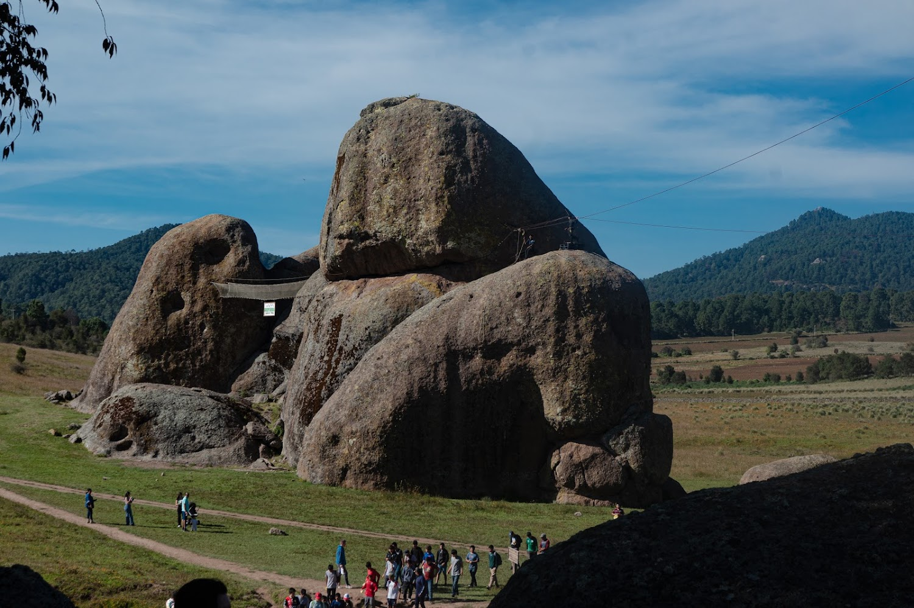
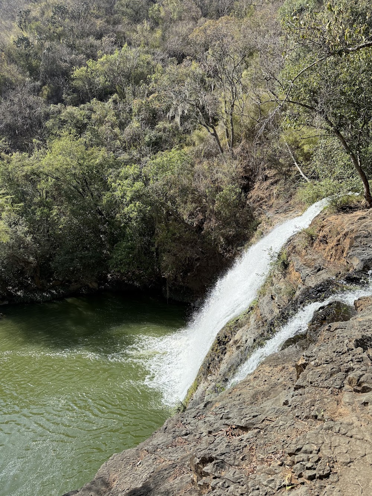
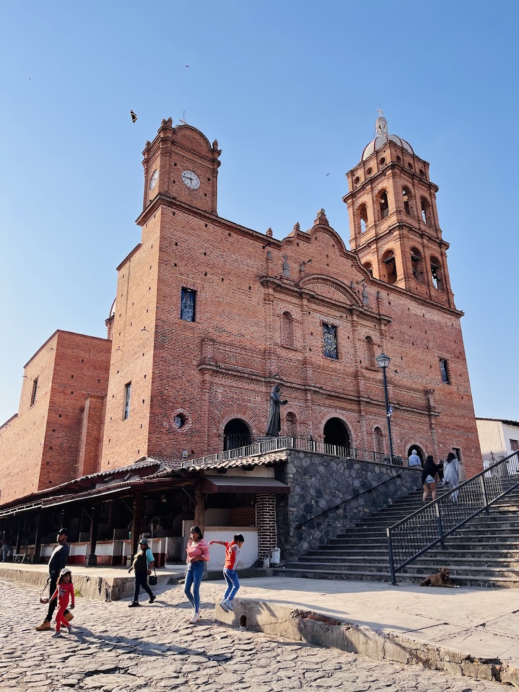

Es uno de los atractivos naturales más representativos de Tapalpa.
Ubicado en un amplio valle rodeado de bosque, este sitio destaca por sus gigantescas
formaciones rocosas cuyo origen sigue siendo objeto de diversas leyendas y teorías geológicas.

Es la caída de agua más alta de Jalisco, con aproximadamente 105 metros de altura.
Se encuentra inmersa en una cañada boscosa que ofrece un entorno natural conservado.

Es una edificación histórica ubicada en el centro del municipio,
construida en el siglo XVI por la orden franciscana.
